Name: Taha KELER
ID: 1323069
LAST MAGAZINE is an original first person survival horror shooter that I developed in Godot 4.7.2 using GDScript. It is not an extension of a tutorial. The player is trapped inside a dark stone labyrinth and has to survive against zombies that constantly hunt them, using a pistol, a shotgun and a rifle. The central idea of the game is ammunition. The player never has enough of it, and every kill only returns a small amount, so the player is forced to keep fighting in order to keep shooting. In addition to the weapons, the player has a torch, a melee shove and a throwable decoy, and supply caches and medkits are placed around the map. A large part of the work also went into the atmosphere: the game uses cave reverb, sounds become muffled behind walls, false footsteps are sometimes heard behind the player when it is quiet, and a heartbeat takes over when health is low.
Goal and result. In the default mode, Extraction, the player has to stay alive until a two minute extraction clock reaches zero, and every kill shortens the clock. The player wins if the clock reaches zero while they are still alive ("EXTRACTED") and loses if their health reaches zero ("YOU DIED"). Three other modes use the same loop: Last Stand (survive for five minutes), Endless (the score is the survival time) and Signal (arm three relays and return to the start).
Progress display and restart. The HUD shows the extraction countdown, the number of kills, the number of zombies alive, the player's health (a number and a segmented bar), the magazine and reserve ammunition, a compass and a minimap. The round can be restarted with Play again on the results screen or with Enter at any time. Both call Game.start_round(), which resets the player (position, health and stance), the weapons, the zombies, the pickups, the objectives, the timers and all counters.
| Action | Key | Action | Key |
|---|---|---|---|
| Move / look | W A S D / mouse or trackpad | Reload | R |
| Fire | Left mouse button | Switch weapon | 1 2 3, Q / X, mouse wheel |
| Sprint / crouch / jump | Shift / Ctrl or C / Space | Torch / melee / decoy | F / V / G |
| Interact (caches, medkits, relays) | Hold E | Restart / pause | Enter / Esc |
Interaction and collision. The keyboard and mouse control a CharacterBody3D in 3D space, and several collisions trigger a gameplay response. When the weapon's raycast hits a zombie's collision capsule, the zombie takes damage and dies at zero health. When a zombie's lunge reaches the player's body, the player takes damage. Each ammunition cache also has an Area3D that detects when the player overlaps it (body_entered), which is what allows the player to take ammunition from it.
Overview of all features. The assignment asks for two features, which are explained in detail in Section 3. However, the game contains several other systems, which are summarised below.
| Feature | Description |
|---|---|
| Four game modes | Extraction, Last Stand, Endless and Signal (hold E to arm three relays, then return to the start and hold the extraction). |
| Three difficulties | Recruit, Soldier and Veteran change the extraction time (100 / 120 / 145 s), the spare ammunition (32 / 24 / 16), the damage taken (65 / 100 / 140%) and the spawn rate (71 / 100 / 147%). |
| Three weapons | Pistol, shotgun and rifle, each with its own magazine, reserve, recoil, spread and sound. Ammunition from kills is shared across all three, which forces the player to switch weapons. |
| Melee, decoy and torch | The melee shove (V) staggers and pushes zombies back. The decoy (G) makes a noise where it lands and draws zombies away. The torch (F) lights the way but makes the player easier to see, and it occasionally flickers. |
| Movement and stealth | Sprint, crouch and jump. Gunshots, reloads and footsteps create noise that zombies can hear, sprinting is loud and crouching is quiet, and sound travels along the corridors rather than through walls. |
| Five zombie types | Shambler, Runner (fast), Brute (high health and cannot be staggered), Stalker (backs away when watched) and Screamer (alerts the others). All of them hunt the player, wind up before lunging, flinch when shot and have glowing eyes while hunting. |
| Caches, medkits and levelling | Ammunition caches refill over time and medkits restore health (both use hold E). Kills give experience, and each level offers a choice of three upgrades out of nine. |
| Horror audio | Cave reverb, muffled sounds behind walls, music that becomes tenser when the player is hunted, false footsteps and calls during quiet moments, and a heartbeat with muffled hearing at low health. |
| HUD, menus and saving | Compass, a minimap drawn from the real map, hit and kill markers, damage direction arcs and ELIMINATED / HEADSHOT popups. The menu leads from Play to mode and difficulty, and there are Stats, Settings (sensitivity, invert look, FOV, volumes, four colour vision modes, interface scale, camera shake, reduced flashing), Controls, Credits and a pause menu. Best scores are saved. |
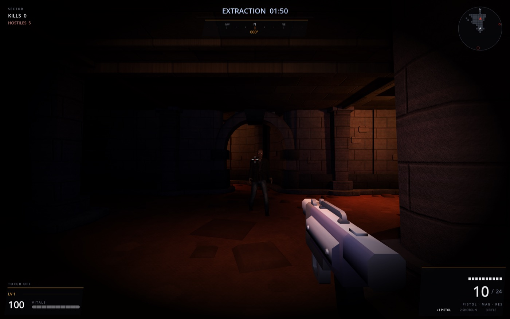
The two largest assets in the game, the map and the zombies, were made by me in Blender with help from ChatGPT (Astra 6). The map is built from pieces of Kenney's Modular Dungeon Kit, and the zombies are built from MakeHuman's CC0 assets. All other third-party assets are CC0 as well, and each one is credited in CREDITS.md and on the in-game Credits screen.
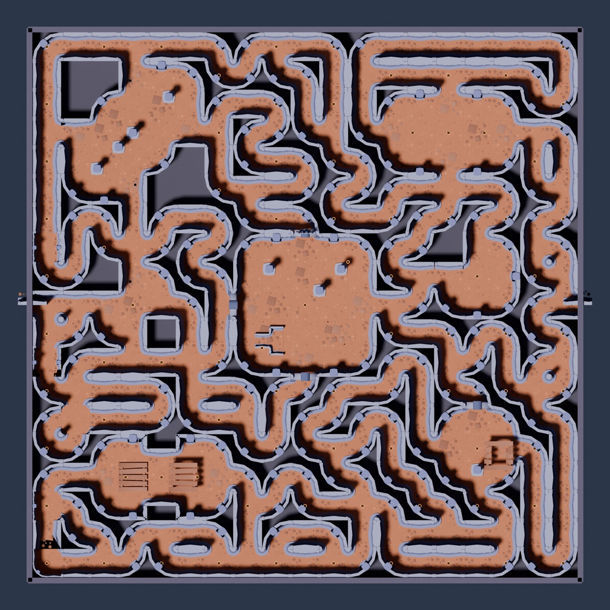
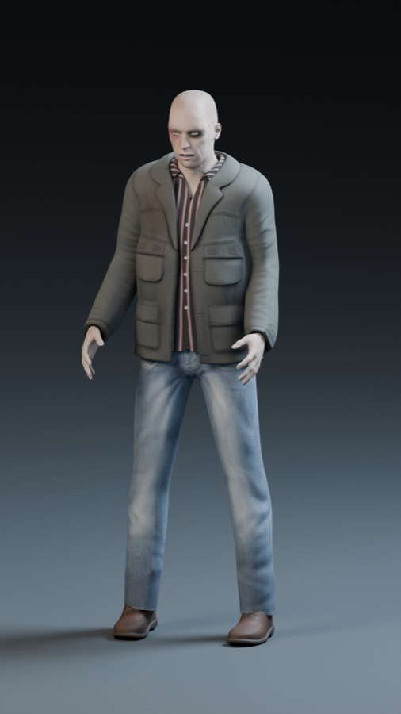
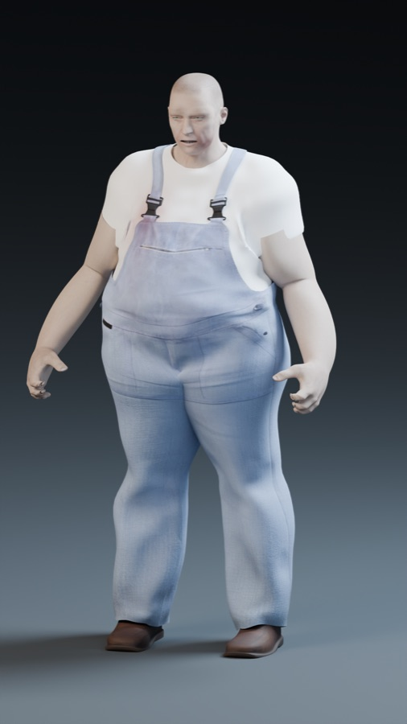
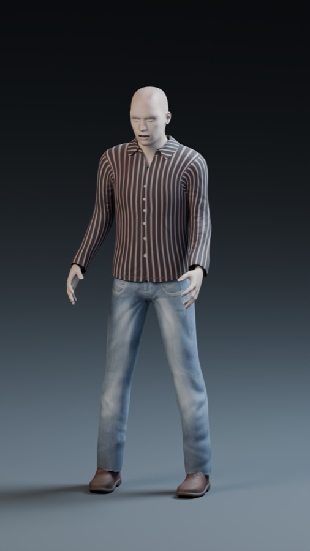
| Asset | Source | Licence | Where it is used |
|---|---|---|---|
| Amethyst Labyrinth (map, colour map, stone shaders) | Self-made in Blender from Kenney's Modular Dungeon Kit, with help from ChatGPT (Astra 6) | Own work; kit CC0 1.0 | amethyst_labyrinth/, the entire play area |
| Zombie pack: normal, heavy and runner (bodies, textures, animations) | Self-made in Blender with help from ChatGPT (Astra 6), using the MakeHuman MPFB2 rig, system assets and skins02 pack (Mindfront Aksel skin) | Own work; sources CC0 1.0 (MPFB code is GPLv3, but its assets and output are CC0) | assets/models/zombies/, all five zombie types |
| Blaster Kit (weapon model, cases) | Kenney | CC0 1.0 | First person weapon and floor props |
| RPG Audio (footsteps, reloads, impacts, groans) | Kenney | CC0 1.0 | Most of the sound effects |
| Horror music, stingers and ambient sounds (18 files, 16 authors) | OpenGameArt | CC0 1.0 (each page checked) | Music, the false "phantom" sounds and the heartbeat; one licence file per source in assets/licenses/ |
| Gunshots, Brute growl, Screamer, cave drone, tension pulse | Self-made (generated by tools/generate_audio.gd) | Own work | assets/audio/generated/ |
| HUD, menus, effects, pickups | Self-made; simple primitives (boxes, spheres, ColorRects) used as placeholders where sufficient | Own work | src/ui/, src/gameplay/ |
| Trigger | Left click (fire) and R (reload). Trying to fire with an empty magazine also starts a reload automatically. |
| State change and owner | The Weapon node (Player/Head/Camera/Weapon, script src/gameplay/weapon/weapon.gd) owns magazine_ammo and reserve_ammo. try_fire() removes one round, and an empty magazine blocks the shot and emits dry_fired. try_reload() starts a timed reload (1.5 s for the pistol) that moves rounds from the reserve into the magazine; it does not start if the magazine is full or the reserve is empty. Kills return a small amount of reserve ammunition. |
| Visible result | The HUD (src/ui/hud.gd: _on_ammo_changed, _on_reload_started, _on_dry_fired) updates the count, turns it red at zero and displays RELOADING. The weapon model also dips and rolls during the reload, and a click is heard when firing an empty weapon. |
| Scenes / scripts | weapon.gd, weapon.tscn, weapon_types.gd, hud.gd, hud.tscn, game.gd (ammunition from kills). |
| Built through MCP? | No. This feature was written by the AI assistant (Claude Code) using its standard file and terminal tools, not through MCP. |
| Check | Input | Expected | Actual | |
|---|---|---|---|---|
| Normal | Full pistol (10 / 24), fire once, then reload | Magazine 10 to 9; after the reload 10 again, reserve 24 to 23 | Shot fired, 10 to 9; reload started; magazine 10, reserve 23 | Pass |
| Boundary | Magazine 0 and reserve 0, press fire, then reload | No shot, magazine stays 0, dry fire feedback, reload refused | try_fire() returned false, magazine 0, one dry_fired; try_reload() returned false | Pass |
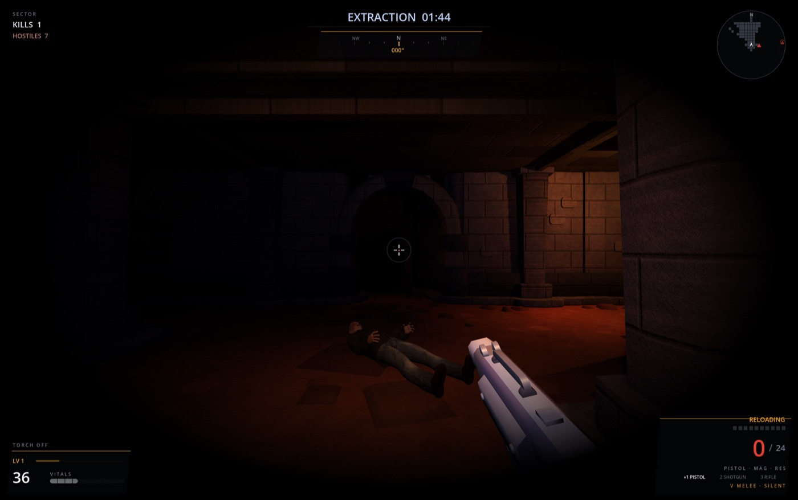
| Trigger | A round from the weapon's raycast hits a zombie in the head zone, which is the top 16% of its body height (Zombie.is_head_hit()). On the 2.6 m Brute, this means any hit above 2.18 m. |
| State change and owner | The Weapon node doubles the damage of that round (headshot_multiplier = 2) and emits the headshot signal. The Game node (src/core/game.gd) owns the headshots counter, which increases by one for every headshot while the round is live and is reset to zero on restart. |
| Visible result | A red HEADSHOT label briefly appears above the crosshair and fades out (HeadshotLabel in hud.tscn, shown by HUD.show_headshot()). The zombie falls noticeably faster, and the results screen shows the number of HEADSHOTS. |
| Scenes / scripts | weapon.gd, zombie.gd, game.gd, hud.gd, hud.tscn. |
| Built through MCP? | Yes. I connected Claude Code to the running Godot editor through the godot-ai MCP server, and every change for this feature was made with MCP tool calls. script_patch was used on all four scripts. In the HUD scene, scene_open, node_create (the new HeadshotLabel), 17 node_set_property calls (text, anchors, offsets, colours, outline, mouse filter and hidden by default) and scene_save were used. The MCP diagnostics also caught one mistake during development: the first patch to zombie.gd used head_fraction before it was declared, and the following patch corrected it. |
| Check | Input | Expected | Actual | |
|---|---|---|---|---|
| Normal | Pistol (26 damage) aimed at a Brute's head (165 hp) from 5 m | 52 damage (2x), headshots 0 to 1, label shown | Health 165 to 113 (52), headshots 0 to 1, label visible | Pass |
| Boundary | The same shot 8 cm below the head zone, plus hits 1 cm below and 1 cm above the edge of the zone | 26 damage (1x) and no change in the counter; 1 cm below is not a headshot, 1 cm above is | Health 165 to 139 (26), headshots stayed at 1; is_head_hit false / true | Pass |
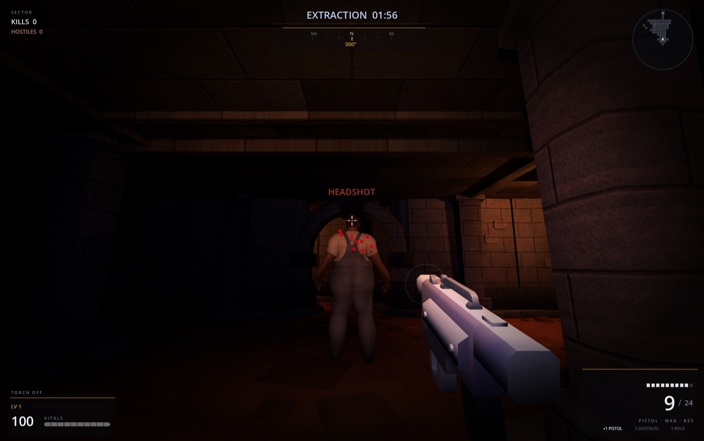
Player health is the loss condition of the game loop. It is triggered when a zombie's lunge reaches the player (Zombie._try_land_hit), and its state is owned by the Health node under Player (src/gameplay/health.gd). As a result, the health number and bar decrease, a red arc points towards the attacker, the edges of the screen pulse red below 35%, and the round ends with YOU DIED at zero. I tested this mechanic in the same way. A Shambler's hit reduced health from 100 to 88 (normal case). A hit of 12 damage at 5 health left the player at exactly 0 rather than a negative value, with one death, the round lost and a second hit ignored (boundary case). After restarting, the player returned to 100 health, 0 kills and 10 / 24 ammunition.
| Intended result | Moving the mouse or the MacBook trackpad turns the camera. From the start, my requirement was that camera look should only use the mouse or trackpad and never the arrow keys. |
| Actual result | During play, the camera did not respond to the mouse at all, even though every automated test passed. |
Original prompt (my requirement from the early sessions): camera look has to use the mouse or trackpad, never the arrow keys, and it has to work on a MacBook trackpad. Response: the assistant created the Player as a CharacterBody3D with mouse look in _unhandled_input that captures the mouse on click (commit "Add first-person player controller"). Later, it also added a HUD with a crosshair made of five small pieces.
Follow-up prompt 1 (my prompt, copied exactly):
Response 1 (the assistant's reply, copied exactly): "Found it. ColorRect defaults to mouse_filter = STOP, and the crosshair's five rects sit dead centre — which is exactly where a captured cursor is pinned. They swallow every InputEventMouseMotion before _unhandled_input ever runs. Every headless test passes because none of them has a cursor sitting over a Control." The assistant also stated that it could not reproduce the problem in its own tests, so "the final word is yours at the keyboard."
Cause. In Godot, a Control node under the mouse receives mouse events first, and _unhandled_input only receives the events that no other node has used. The crosshair pieces were ColorRect nodes left on the default MOUSE_FILTER_STOP, and they were placed exactly where the captured mouse is held. Therefore, the player never received any mouse movement. The automated tests did not detect this because headless Godot never places a mouse over a Control.
Fix. Every crosshair piece in src/ui/hud.tscn was set to mouse_filter = 2 (IGNORE). A regression test was also added (tests/manual/verify_look.gd, test_look_nothing_on_the_hud_swallows_the_mouse), which sends real mouse movement from the cursor position and fails if any HUD element blocks it. After this, every new HUD element followed the same rule, including the HUD redesign and the HEADSHOT label created through MCP.
Follow-up prompt 2 and evidence (my prompt, copied exactly, after testing on my MacBook). The regression test also passes in the project's check script (tools/check.sh, exit code 0), and a second correction is described in Appendix B.
CREDITS.md). https://opengameart.org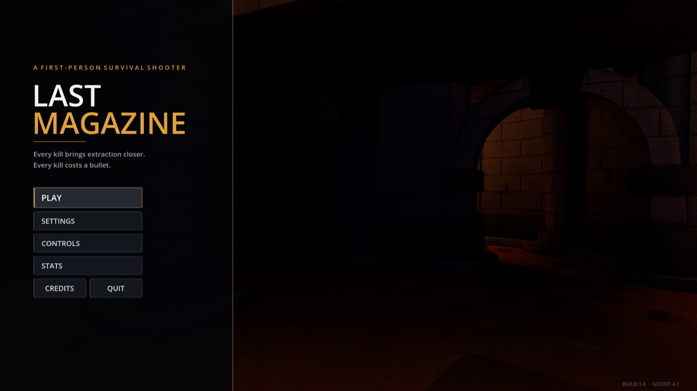
build/macos/LastMagazine.app, ad-hoc signed, universal binary) running on its own without the Godot editor. The frame was recorded by the exported game itself (--write-movie). The Windows build (build/windows/LastMagazine.exe with LastMagazine.pck) was exported from the same project.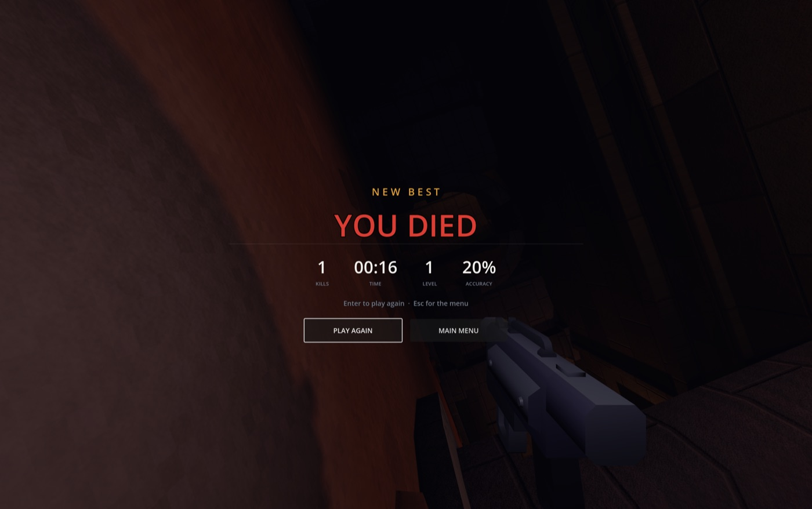
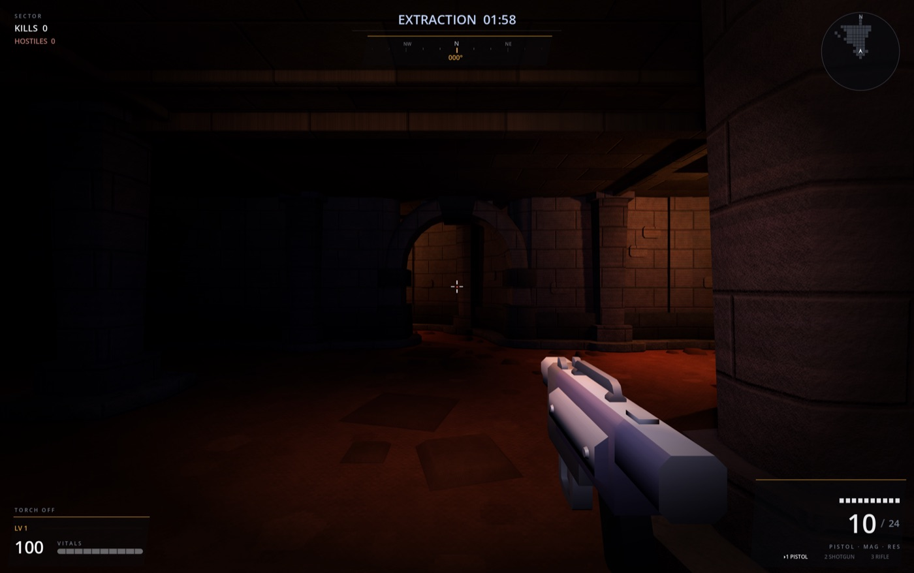
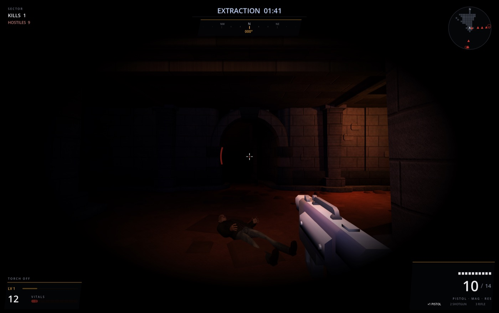
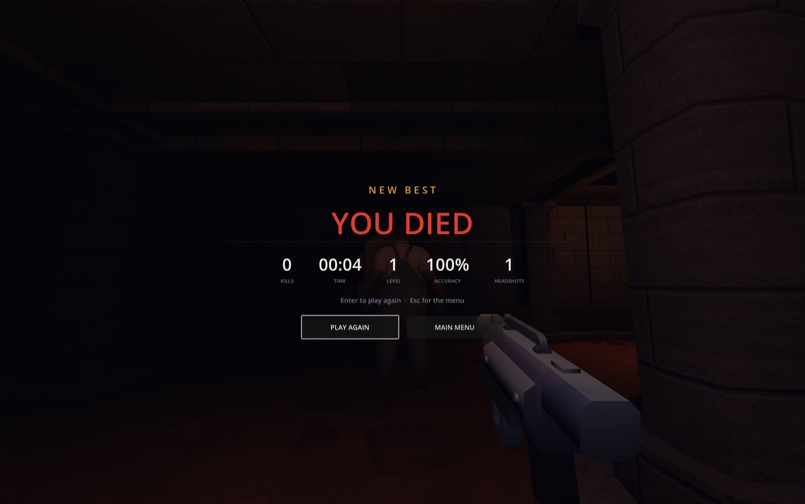
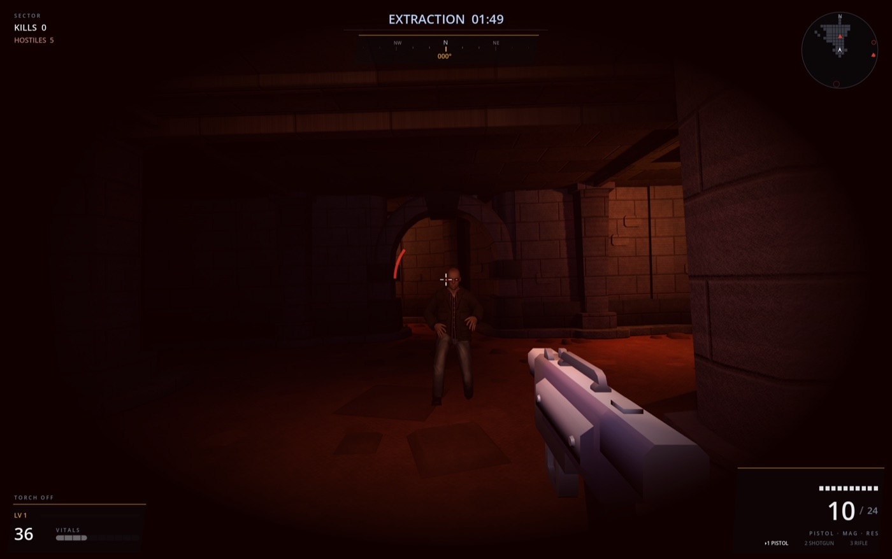
My prompt (copied exactly): "i would prefer that the zombies always run at me, instead of just staying there in there places"
First result (incorrect). The assistant made every zombie continuously track the player's position so that it would always move towards them. However, when this was measured in a real round (Endless mode, 20 zombies, player standing still), it had not worked. None of the zombies were unaware anymore, but 13 out of 20 were still standing still while "investigating" 15 to 23 m away, and the average distance remained at 15.0 m after one minute.
Cause. The navigation mesh of the labyrinth sits up to 0.7 m above the floor in some areas, and Godot's NavigationAgent3D only considers a waypoint reached within path_desired_distance = 0.6 m, measured in 3D. As a result, the first waypoint was effectively the zombie's own position raised by 0.7 m. It was never reached, so the zombie kept steering towards a point directly above itself without moving.
Fix and evidence. Zombie._next_waypoint() in src/gameplay/zombie/zombie.gd now measures waypoints on the flat ground and moves on to the first path point that is actually ahead. After the fix, the same test showed all 20 zombies within 6 m after 50 seconds, with an average distance of 1.4 m.
This game was developed with an AI assistant (Claude Code). The headshot feature was built through the godot-ai MCP, and the exact tool calls and the scenes and scripts they changed are described in Section 3. The Blender assets (the map and the zombies) were made by me with help from ChatGPT (Astra 6).